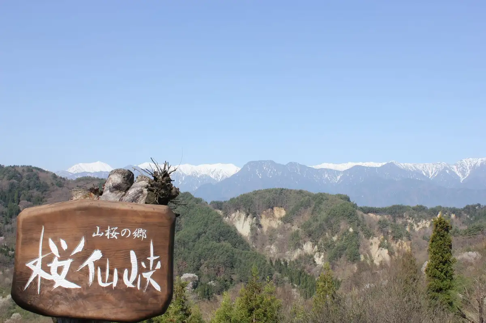
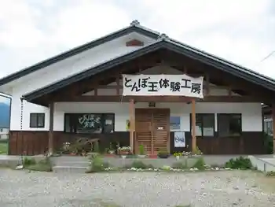
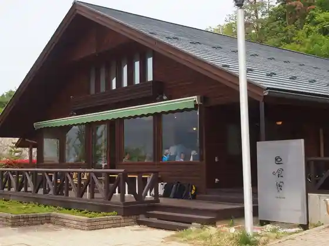
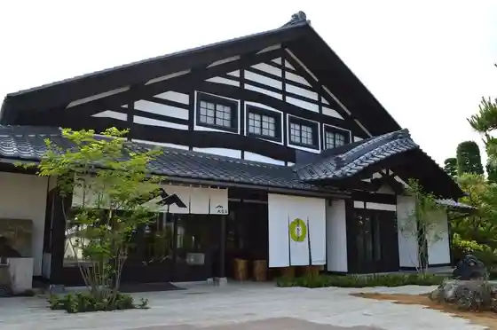

Japan / Nagano / Naganoikeda
Naganoikeda
Naganoikeda · Nagano
Naganoikeda
Highlighted on the Nagano map.

Sights
Riku Sato no Yamazakura (Sakura Sen Kyo)
Naganoikeda, Nagano · 0261-62-9197 · Official / source link
Tombo Gyokutai Ken Workshop GLASSART Atorie SHO
Naganoikeda, Nagano · 0261-61-5345 · Official / source link

Kita Arupusu Viewpoint Naganoikeda Shokudo Shin Shoku Kan
Naganoikeda, Nagano · 0261-85-2733 · Official / source link

Oberuju Ra Vi Torankiiyu
Naganoikeda, Nagano · 0261-29-6635 · Official / source link
Daisekkei Shuzo Chokueiten Kamon Daisekkei
Naganoikeda, Nagano · 0261-62-3125 · Official / source link

Higashiyama One Aruki (Torekkingu Sansaku)
Naganoikeda, Nagano · 0261-62-9197 · Official / source link
Riku Sato Yamazakura (Torekkingu Sansaku)
Naganoikeda, Nagano · 0261-62-9197 · Official / source link
Omine Highlands Shirakaba Forest (Uokingu)
Naganoikeda, Nagano · 0261-62-9197 · Official / source link
YMP (Yunta Memorial Park)
Naganoikeda, Nagano · 0261-85-4101 · Official / source link
Hakko to Kurashi Ohako
Naganoikeda, Nagano · Official / source link